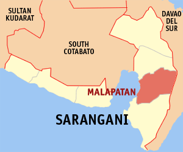
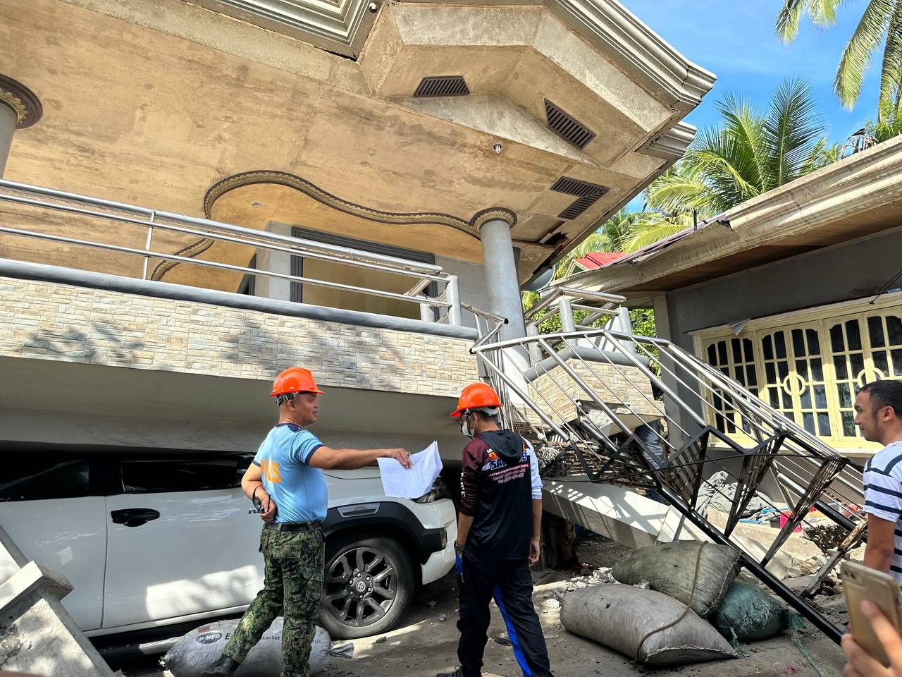

Hon. Salway D. Sumbo Jr.Municipal Mayor
Sarangani Bay · Since 1969
Welcome to Malapatan
A first-class town on the eastern shore of Sarangani Bay, home to Christian, Maguindanaon and Blaan communities living and working side by side.
82,577Population (2024 census)
609.28Land area in km²
12Barangays
1stIncome class
About the Town
Where cultures meet by the bay
Malapatan was created on June 21, 1969 through Republic Act No. 5823, which separated it from the Municipality of Glan. At the time it belonged to South Cotabato. It became part of Sarangani when the new province was created in 1992.
The name is often traced to the Blaan language: mala (pepper) and fatan (place), roughly "the place of peppers."
The town is known for its weaving traditions. Blaan igem mat weaver Estelita Bantilan of Malapatan was named a National Living Treasure (Gawad sa Manlilikha ng Bayan), and Maguindanaon weavers keep the inaul tradition alive.

- CreatedJune 21, 1969 (RA 5823)
- Mother townGlan
- NeighborsAlabel (north), Glan (south), Davao Occidental (east), Sarangani Bay (west)
- LanguagesCebuano, Maguindanao, Blaan, Tboli, Tagalog
- EconomyCopra and coconut, cattle, corn, sugarcane, banana, mango, fishing
- ZIP code9516
- Area code(083)
- ElectricitySOCOTECO II
Our Communities
The 12 barangays of Malapatan
Population figures are from the 2020 Census of Population and Housing (PSA), when the town counted 80,741 residents.
No barangay matches your search.
Local Government
Municipal officials
Names are taken from public sources. Please confirm them with the Office of the Mayor before relying on them.
Hon. Jean D. Delos SantosMunicipal Vice Mayor
Sangguniang Bayan members
- Hon. Boyet S. OganSB Member
- Hon. Danilo T. AbdulradzakSB Member
- Hon. Eleanor S. SuibSB Member
- Hon. Al-Omer P. SuibSB Member
- Hon. Diana Jade V. Tatad-SambagaSB Member
- Hon. Ruben A. Sumbo Jr.SB Member
- Hon. Norberto A. ButiongSB Member
- Hon. Brandy R. PalarionSB Member
Frontline Services
How can we help you?
Most services are available at the Municipal Hall in Poblacion, Monday to Friday, 8:00 AM to 5:00 PM. Requirements can change, so ask the office before you go.
Civil Registry
Registration and copies of birth, marriage and death records.
Municipal Civil RegistrarBusiness Permits
New applications and yearly renewal of Mayor's and business permits.
BPLOReal Property Tax
Tax declarations, assessments and payment of real property tax.
Assessor & TreasurerHealth Services
Consultations, immunization, maternal care and medical certificates.
Rural Health UnitSocial Welfare
Assistance for families, senior citizens, PWDs, solo parents and children.
MSWDOAgriculture
Support for farmers and fisherfolk, seeds, livestock and farm advice.
Municipal Agriculture OfficeDisaster Response
Early warnings, evacuation and emergency response during calamities.
MDRRMOBuilding Permits
Building, fencing, electrical and occupancy permits.
Municipal Engineering Office
Ready when disaster strikes
After an earthquake, the Malapatan MDRRMO and partner agencies carried out a Rapid Damage Assessment and Needs Analysis (RDANA) of damaged homes and buildings.
Photo: Malapatan MDRRMO (public domain), via Wikimedia CommonsYearly reminders
- January 1–20Renew business permits to avoid penalties.
- On or before March 31Pay the first quarter of real property tax, or the full year to qualify for an advance-payment discount.
- JuneFoundation anniversary and Pakaradyan Festival.
Tourism & Culture
Discover Malapatan
Every June
Pakaradyan Festival
"Pakaradyan" is Maguindanaon for celebration or thanksgiving. Held with the town's foundation anniversary, it brings together Christian, Muslim and Blaan traditions, with street dancing and colorful ginakit boats on the bay.
Living heritage
Blaan Mat Weaving
Blaan weavers here make igem mats with patterns said to come to them in dreams. Master weaver Estelita Bantilan's work earned national recognition as a living treasure.
Maguindanaon craft
Inaul Weaving
Bright, hand-woven inaul cloth carries the Maguindanaon heritage of the town's Muslim communities.
Nature
Sarangani Bay Coast
The town's western edge faces Sarangani Bay, with coastal barangays and fishing communities a short drive from General Santos City.
Get in Touch
Visit the Municipal Hall
- AddressMunicipal Hall, Poblacion, Malapatan, Sarangani 9516
- Office hoursMonday to Friday, 8:00 AM – 5:00 PM (except holidays)
- ProvinceProvincial Government of Sarangani
Emergency?
Call the national emergency hotline 911.